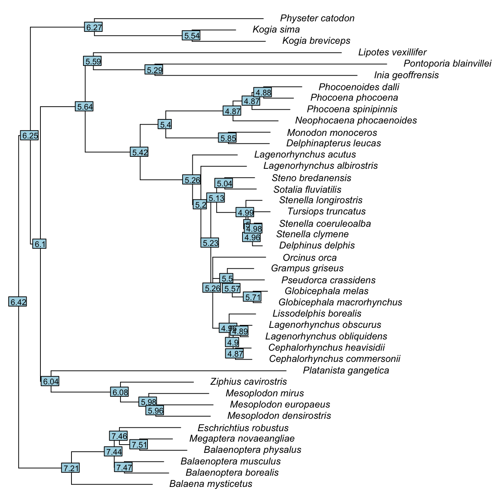
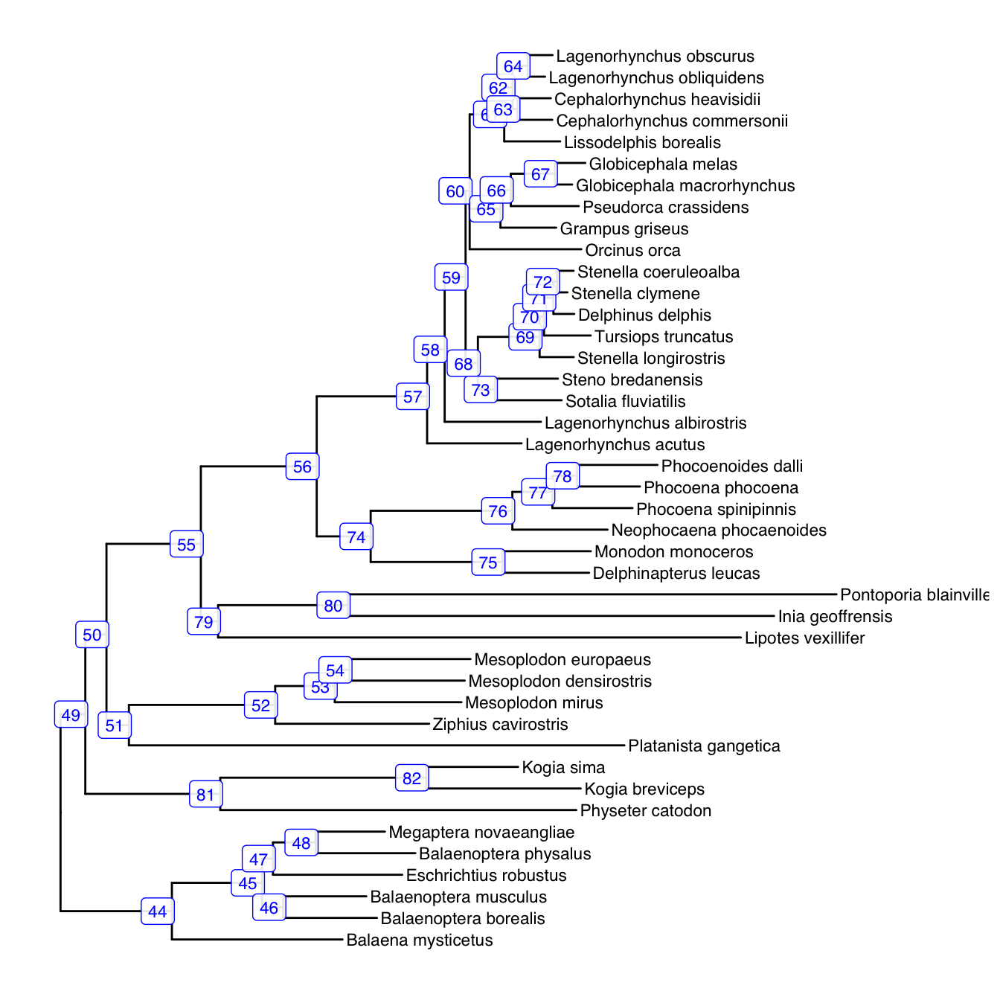
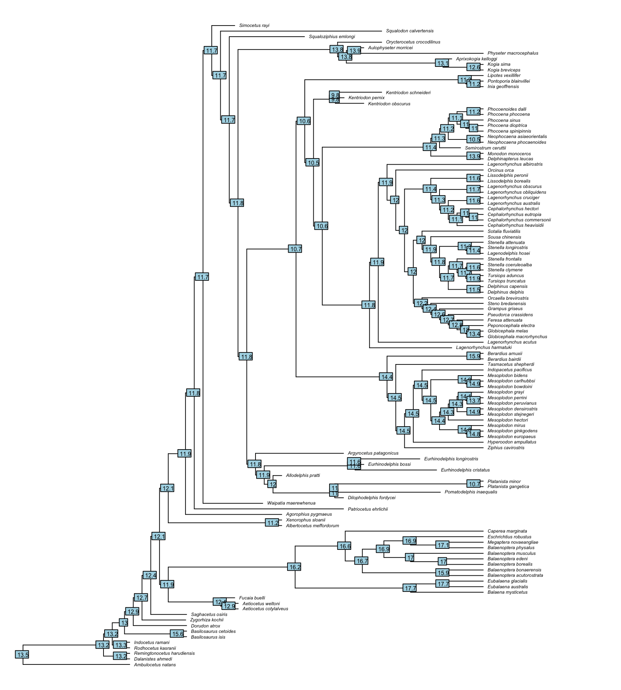

9 Ancestral State Reconstruction II
Previously, we looked at reconstructing the evolutionary history of binary traits, such as the presence or absence of sexual swellings in macaques, and categorical traits such as the modes of burrowing in carnivores. In this chapter, we’ll be applying the same principles to continuous data.
The logic of ancestral state reconstruction applies equally to continuous traits like body size as it does to categorical traits. Here, we’ll be looking at the evolutionary history of whales, dolphins and porpoises (Cetacea).
As always, check that you have set your working directory!
9.1 Data
The data we have here is taken from a study of the evolution of cetacean brain and body size (Montgomery et al. 2013). The reduced version here contains only body mass and the log transformed body mass for 42 species.
9.2 Tree
We also have a tree from the 10ktrees project (Arnold et al. 2010). For more information about this website, see chapter 3.
We need to check the data and tree match up. Get into this habit! It will save you a lot of time and patience.
$tree_not_data
[1] "Balaenoptera_acutorostrata" "Balaenoptera_bonaerensis"
[3] "Balaenoptera_edeni" "Berardius_arnuxii"
[5] "Berardius_bairdii" "Caperea_marginata"
[7] "Cephalorhynchus_eutropia" "Cephalorhynchus_hectori"
[9] "Delphinus_capensis" "Delphinus_tropicalis"
[11] "Eubalaena_australis" "Eubalaena_glacialis"
[13] "Eubalaena_japonica" "Feresa_attenuata"
[15] "Hyperoodon_ampullatus" "Hyperoodon_planifrons"
[17] "Indopacetus_pacificus" "Lagenodelphis_hosei"
[19] "Lagenorhynchus_australis" "Lagenorhynchus_cruciger"
[21] "Lissodelphis_peronii" "Mesoplodon_bidens"
[23] "Mesoplodon_bowdoini" "Mesoplodon_carlhubbsi"
[25] "Mesoplodon_ginkgodens" "Mesoplodon_grayi"
[27] "Mesoplodon_hectori" "Mesoplodon_layardii"
[29] "Mesoplodon_perrini" "Mesoplodon_peruvianus"
[31] "Mesoplodon_stejnegeri" "Orcaella_brevirostris"
[33] "Orcaella_heinsohni" "Peponocephala_electra"
[35] "Phocoena_dioptrica" "Phocoena_sinus"
[37] "Platanista_minor" "Sousa_chinensis"
[39] "Stenella_attenuata" "Stenella_frontalis"
[41] "Tasmacetus_shepherdi" "Tursiops_aduncus"
$data_not_tree
character(0)Clearly some species need to be dropped from the tree!
whale.tree <- drop.tip(whale.tree,
geiger::name.check(whale.tree, whale.data)$tree_not_data)
geiger::name.check(whale.tree, whale.data)[1] "OK"9.3 Ancestral State Reconstructions
Now we’re going to dive in with a reconstruction. We are using phytools for this analysis so we should load the package and create a named data vector (Revell 2012).
The function we need is called fastAnc and it returns the ancestral states in a simple list.
ancstates <- fastAnc(tree = whale.tree, #Our phylogeny
x, #Our data vector
CI = TRUE) #Estimate 95% confidence intervals
ancstatesAncestral character estimates using fastAnc:
43 44 45 46 47 48 49 50
6.422936 7.205471 7.440591 7.465284 7.456463 7.511707 6.248774 6.097254
51 52 53 54 55 56 57 58
6.044864 6.078069 5.983733 5.962172 5.641527 5.423179 5.255812 5.204571
59 60 61 62 63 64 65 66
5.225028 5.260263 4.960018 4.901903 4.871755 4.888973 5.503471 5.567067
67 68 69 70 71 72 73 74
5.710190 5.130854 4.989830 5.001555 4.960103 4.976035 5.039423 5.403331
75 76 77 78 79 80 81 82
5.850745 4.870560 4.871380 4.883752 5.590679 5.292187 6.267476 5.540614
Lower & upper 95% CIs:
lower upper
43 5.745860 7.100012
44 6.599516 7.811426
45 7.009526 7.871657
46 7.037792 7.892775
47 7.023487 7.889440
48 7.078101 7.945312
49 5.617637 6.879912
50 5.480639 6.713870
51 5.396996 6.692732
52 5.495449 6.660689
53 5.489021 6.478445
54 5.474786 6.449558
55 4.977189 6.305864
56 4.818460 6.027899
57 4.833079 5.678546
58 4.834286 5.574857
59 4.930739 5.519317
60 4.970172 5.550353
61 4.679687 5.240349
62 4.656292 5.147513
63 4.621817 5.121692
64 4.661301 5.116645
65 5.175817 5.831126
66 5.231290 5.902844
67 5.455762 5.964619
68 4.810518 5.451190
69 4.731256 5.248405
70 4.760819 5.242292
71 4.767162 5.153044
72 4.800446 5.151624
73 4.692067 5.386779
74 4.792073 6.014589
75 5.352644 6.348847
76 4.380205 5.360915
77 4.449659 5.293101
78 4.482168 5.285335
79 4.892863 6.288496
80 4.417990 6.166384
81 5.492347 7.042604
82 4.959783 6.121445To get an idea of what these results show, we should probably plot it. The nodelabels function maps the ancestral states listed in our ancstates object onto the nodes of the tree which are listed in the same order.
plot(whale.tree, cex = .8, label.offset = .01, no.margin = TRUE)
nodelabels(round(ancstates$ace, digits = 2), cex = .67)
As is often the case, there are better ways to plot this information! The function contMap calls fastAnc and then maps the history of the trait onto the tree as a heatmap. This is a much clearer plot.
9.4 BayesTraits
Simply reconstructing the history of a trait can be very interesting. See some papers by Montgomery et al. (2010, 2013) for just a few great examples. However, this methodology is not limited to simply estimating the past.
Most of what we are going to do here could probably be acheived in R either with existing packages or some clever coding. However, the standard package for several analyses has been BayesTraits for some time.
BayesTraits is a command line program, which can make it kind of intimidating. Actually (like R), it’s relatively easy to use but can take some getting used to. Fortunately, Randi Griffin has written an excellent R package btw that can operate the program from within R.
It’s worth noting at this point that btw is not written to run BayesTraits for you so that you don’t have to understand the program. Randi states very clearly that the package is purely for optimising workflow. In other words, this allows you to have all your data, results and code in one place. You still need to understand how to use the program. Fortunately the manual is very detailed.
First up, download BayesTraits version 3 for your operating system.
IMPORTANT! BayesTraits output files will be written into your working directory. They will overwrite any files with the same name so don’t have any files called “data.txt”, “tree.nex” or “inputfile.txt” in this directory unless you are ok with losing them.
Next, we need to install btw. This isn’t a CRAN archived package so we’ll be installing directly from Randi Griffin’s GitHub. Once installed, we can use BayesTraits from within R!
There are some important differences in how R and BayesTraits read data that need to be summarised here.
- The first column of your data must contain species names.
- Species names must match exactly between tree and data (but don’t worry about the order).
- No spaces in species names.
- Discrete characters have to be of class character or factor (between 0-9) and NOT integer.
- Ambiguous discrete characters can be represented as 01.
- Missing data must be represented as - rather than NA.
BayesTraits consists of modules (see manual for details) that are numbered and can be called up for different analyses.
If you can’t get R and Bayestraits to play nicely together, you may want to consider using Bayestraits directly from the command prompt (Windows) or terminal (Mac). It’s fairly straightforward once you’ve got the hang of it so be patient. Alternatively, all of this can be done with R packages like ape (Paradis and Schliep 2018), geiger (Harmon et al. 2008) and phytools (Revell 2012) amongst others.
9.5 Modelling Evolution
If we have some data about traits across a group of animals and an associated tree, we may want to ask about how that trait has evolved over time. For this we can compare the trait to models of evolutionary change.
9.5.1 Brownian Motion
Brownian motion (BM) is the most commonly used model of evolutionary change. In some ways, it can represent a kind of null model but do not confuse this! It doesn’t mean nothing is changing or that evolution is not taking place.
Brownian motion assumes three things;
- Evolutionary changes in a trait are randomly distributed around a mean of 0.
- Evolutionary changes in a trait are independent of previous changes and changes on other branches.
- Larger changes are more likely to occur on longer branches.
All this means that BM is a random walk model in which the trait varies along the branches essentially at random.
We can use BayesTraits (via R) to model the evolution of body size in cetaceans with the assumption of Brownian motion. First we need to isolate our variables into a data table for btw. The way to do this is quite simple. We can simply extract the two columns we need (1 and 2) into a new object.
species log.body.mass
1 Kogia_breviceps 5.523746
2 Kogia_sima 5.226600
3 Physeter_catodon 7.573065
4 Platanista_gangetica 4.775465
5 Delphinapterus_leucas 5.803457
6 Monodon_monoceros 6.198198This first analysis corresponds to Continuous: Random Walk Model A ML in the BayesTraits manual. We can see from the manual that the commands to run this are “4 1 Run”. You need to be familiar with BayesTraits to interpret this so the first time you do it, you may want to do it in BayesTraits directly (via the command prompt or terminal). In essence, BayesTraits asks us questions and provides us with options for what we want it to do and 4, 1, Run are the options to run this analysis.
Given that we know what we want to do ahead of time, we can enter the commands into a command vector in R. To run these commands through BayesTraits, R will write them into a text file so BayesTraits can interpret them when needed. Note that you don’t need to enter Run into this vector as btw will take care of that for us.
Note that if you have nodelabels in your tree, there will be an error when running BayesTraits. You can remove nodelabels without effecting the structure of your tree like this.
I have a path on my desktop just for BayesTraits analyses. Remember that there must be a copy of BayesTraitsV3 stored here. That’s all you need as the output will be read back into R by btw. You also should remember to change your working directory back if you are finished with BayesTraits. In this chunk, I’ve saved the existing directory at the start and reset it immediately after the analysis is completed.
wd.reset <- getwd()
setwd("~/Desktop/BayesTraits")
m1 <- bayestraits(data = BT.data, tree = whale.tree, commands = command_vec1)
setwd(wd.reset)On we go! The object that should have appeared in your R environment contains all the outputs you need from BayesTraits. Let’s have a look at the results component of the Log.
Tree.No Lh Alpha.1 Sigma.2.1
1 1 -31.9823 6.422936 6.315406These results give us the Log likelihood (Lh), the reconstructed ancestral node (Alpha.1) and the phylogenetically corrected variance of the data (Sigma.2.1). The important thing to look at here is the log likelihood. We will use that to compare the BM model to other models.
9.5.2 Directional Evolution
So far we’ve looked at the random walk model of evolution. In reality, what we are usually interested in is deviations from the random walk model. We can investigate this using similar methods, but with a directional model.
An example of a case when we might be interested in a directional model is Cope’s rule (Kingsolver and Pfennig 2004, Hone and Benton 2005). Cope’s rule states that over time, lineages tend to have larger body sizes. So basically, on average animals tend to get bigger over evolutionary time.
Let’s see if we can detect a trend in cetacean body mass. For this analysis, we need a non-ultrametric tree (a phylogram rather than a chronogram). Luckily that’s what we already have. The branch lengths here describe evolutionary distance in terms of genetic change and so shorter branches indicate fewer genetic changes.Figure 9.1: Phylogenetic tree of 42 species of cetcaeans with branch lengths proportional to molecular change.
We’re using BayesTraits again so the first step is to get our data into the right format.
As before, we run the random walk (BM) model first. Remember we need to set the working directory to a path where BayesTraits is stored.
setwd("~/Desktop/BayesTraits")
RW.commands <- c("4", "1")
RWmod <- bayestraits(BT.data, whale.tree, RW.commands)
RWmod$Log$results Tree.No Lh Alpha.1 Sigma.2.1
1 1 -31.9823 6.422936 6.315406The directional model takes a different set of commands.
setwd("~/Desktop/BayesTraits")
D.commands <- c("5", "1")
Dmod <- bayestraits(BT.data, whale.tree, D.commands)
Dmod$Log$results Tree.No Lh Alpha.1 Beta.1 Sigma.2.1
1 1 -30.22462 7.951217 -12.37922 5.808331Now we need to compare these models! What he have so far is two models and a log likelihood assigned to each. This means we can compare them using a likelihood ratio test. The general formula for an LR test is;
\[\text{LR}=2\times(\text{Lh}_{\text{ Model B}} - \text{Lh}_{\text{ Model A}})\]
The result is the likelhood ratio statistic (LR) which is asymptotically \(\chi^2\) distributed with degrees of freedom equal to the difference in the number of parameters between the models. Model A has 1 parameter (the root value) and model B has 2 (the root and the direction of change) so the degrees of freedom are 1.
[1] 3.515352[1] 0.06080274Note: pchisq gives the proportion of the distribution to the left of the value. To test if the model is better than the null model, we use 1 - pchisq.
The btw package has a function that will do all this for us. Be careful with interpretation though. Note that the p-value is different. Take this away from 1 and you have your p-value as above.
model1.Lh model2.Lh LRstat pval
1 -31.9823 -30.22462 3.515352 0.9391973So what have we got here? Well we have tested two models of the evolution of body size in cetacea. The first is a random walk (Brownian motion) model of evolution in which we have estimated two parameters. The second is a directional model in which we have estimated 3 parameters. Model comparison showed no significant difference between them (LR = 3.52, p = 0.06) and so we should favour the simpler, 2 parameter model. Thus we have no evidence for a directional trend in cetacean body mass evolution.
9.6 Changes in the rate of evolution of a trait
Often when investigating the evolution of a continuous trait, we might have reason to suggest that in some lineages, the rate of evolution of that trait changed. 
Let’s say we have a hypothesis that says the rate of change of body mass changed at the root of mysticetes (node 44). We can paint that onto the tree for demonstration using paintSubTree and plotSimmap in phytools (Revell 2012).
require(phytools)
tree1 <- paintSubTree(whale.tree, 44, "2")
plotSimmap(tree1, lwd = 2, fsize = 0.7)
Now we can run the test. Here the function brownie.lite in phytools compares the single rate model to the multi-rate model we have specified!
ML single-rate model:
s^2 se a k logL
value 6.165 1.3453 6.4229 2 -31.9823
ML multi-rate model:
s^2(1) se(1) s^2(2) se(2) a k logL
value 7.1119 1.6786 1.2663 0.8687 6.6116 3 -30.475
P-value (based on X^2): 0.0825
R thinks it has found the ML solution.Here we’ve found no evidence of a regime shift in mysticete cetaceans (p = 0.083).
9.7 Uncertainty
If you are familiar with cetaceans and their evolutionary history, you might be surprised by our findings so far in this chapter. The prevailing state of knowledge suggests that cetaceans have evolved large body sizes since the transition to the water of an approximately dog-sized ancestor at the root of our tree. Given what we know about the fossil record of cetacea, we would expect to detect an increase in body size over the tree. To solve this puzzle, we need to look at what information we provided our analysis with.
As the old saying goes, if you put garbage in, you’ll get garbage out and this seems to apply here. For example, let’s look closely at our reconstructions. You can see here that both reconstructions have estimated the mass of the ancestor of cetaceans. Remember that these are log transformed data so we have to transform them back if we want to get a straightforward measurement of mass.
[1] 2648111[1] 89375216So depending on our model of evolution the ancestor was either 2,648.1 kg or 89,375.2 kg. A big difference between models so which one we choose really matters.
This is even more of a problem when we look at the fossil record of cetaceans. Indohyus (Raoellidae) is thought to be the species that most closely represents the transition to the water by cetacean ancestors (Thewissen et al. 2009) and its mass is estimated at around 10kg. An early species of cetacean called Pakicetus was estimated at around 45kg. So we are orders of magnitude away from what the fossil record shows us!
This problem is well understood in phylogenetic comparative methods. In fact, all methods of ancestral state reconstruction perform very poorly when compared to what we know from the fossil record (Webster and Purvis 2002). As you might expect, the deeper into your tree you try to estimate an ancestral state, the greater the uncertainty. This is especially clear when you look at estimating the root (Gascuel and Steel 2014). The solution is to incorporate fossil data in the analysis (Slater et al. 2012).
9.7.1 Fossils
To demonstrate the importance of fossil data, let’s take a closer look at the evolution of body size in cetaceans. With fastAnc, we found a mass of around 2,650kg for the root of the cetaceans.
The package RRphylo (Castiglione et al. 2018) contains data on fossil and living cetaceans (Serio et al. 2019). Using these data, we can hopefully perform a more rigorous ancestral state reconstruction (Castiglione et al. 2020). Note that the values here differ between datasets because the previous dataset used a log10 transformation whereas this one uses a natural log transformation!
library(RRphylo)
data("DataCetaceans")
DataCetaceans$treecet -> treecet
DataCetaceans$masscet -> masscetThe RRphylo function performs a variant of ancestral state reconstruction called phylogenetic ridge regression (Castiglione et al. 2020).
RRphylo returns a lot of information as a list. Included in this list is the tree used (useful for plotting) and aces which contains the estimates for the traits at the nodes.
plot(RR$tree, cex = .4, label.offset = .5, no.margin = TRUE)
nodelabels(round(RR$aces, digits = 1), cex = .5)
Using this reconstruction, we can extract the mass of the root. Remember that we need exp to calculate the untransformed value rather than raising to the power of 10 because of the natural log transformation.
[1] 727063.9So our new estimate of the mass of the ancestor of cetaceans is 727.1kg. This is much closer to the estimated mass of early archeocete cetaceans like Ambulocetus natans at about 430kg and Indocetus ramani at around 630kg.
If we still aren’t satisfied that we have included the best information we have available, we can actually fossilise a node by passing a named list of ancestral states to the RRphylo function. Following the example of Castiglione et al. (2020), we can set the node of the ancestor of mysticetes to a known mass. Here we are assuming that the most recent common ancestor of all mysticetes can be represented by the species Mystacodon selenensis which weighed arond 150kg. Also we need to know that this ancestor is represented by the node labelled 128 in our tree object.
Now we can pass this state to the argument aces in RRphylo and the analysis will hold node 128 at the value we have set. You should be able to see that in the following plot, the ancestor of mysticetes is reconstructed as 11.9 rather than 12.9 in the previous reconstruction.
RR2 <- RRphylo(treecet, masscet, aces = x)
plot(RR2$tree, cex = .4, label.offset = .5, no.margin = TRUE)
nodelabels(round(RR2$aces, digits = 1), cex = .5)
Hopefully you can see that the more fossil information you include in your reconstructions, the more reliable they are.
9.7.2 Revisiting Mysticete Body Mass
In using the fossil data we have added in here, Castiglione et al. (2020) demonstrated that mysticetes actually do conform to Cope’s rule because they have an increasing trend in body size over time. This shows just how important adding in fossil data can be if you want the full picture.
This seems to suggest that we should also find a regime shift in mysticetes. Let’s have a closer look. We begin again by painting the tree at the specific node leading to mysticetes.
Next we run brownie.lite on our expanded dataset.
ML single-rate model:
s^2 se a k logL
value 0.2047 0.0265 13.2057 2 -178.7922
ML multi-rate model:
s^2(1) se(1) s^2(2) se(2) a k logL
value 0.176 0.0245 0.4012 0.147 13.2056 3 -176.0958
P-value (based on X^2): 0.0202
R thinks it has found the ML solution.There you have it! We can now say that we have evidence in favour of a regime shift in mysticete body size (p = 0.02).
9.8 Further info
We’ve only just scratched the surface of what is possible with ancestral state reconstruction. For some background reading, have a look at chapter 4 of The comparative approach in evolutionary anthropology and biology (Nunn 2011).
Bibliography
Arnold, C., Matthews, L.J., and Nunn, C.L. (2010) ‘The 10kTrees Website: A New Online Resource for Primate Phylogeny’. Evolutionary Anthropology: Issues, News, and Reviews [online] 19 (3), 114–118. available from <https://doi.org/10.1002/evan.20251>
Castiglione, S., Serio, C., Mondanaro, A., Melchionna, M., Carotenuto, F., Di Febbraro, M., Profico, A., Tamagnini, D., and Raia, P. (2020) ‘Ancestral State Estimation with Phylogenetic Ridge Regression’. Evolutionary Biology [online] available from <https://doi.org/10.1007/s11692-020-09505-x>
Castiglione, S., Tesone, G., Piccolo, M., Melchionna, M., Mondanaro, A., Serio, C., Febbraro, M.D., and Raia, P. (2018) ‘A New Method for Testing Evolutionary Rate Variation and Shifts in Phenotypic Evolution.’ Methods in Ecology and Evolution [online] 9, 974–983. available from <https://besjournals.onlinelibrary.wiley.com/doi/full/10.1111/2041-210X.12954>
Gascuel, O. and Steel, M. (2014) ‘Predicting the Ancestral Character Changes in a Tree Is Typically Easier Than Predicting the Root State’. Systematic Biology [online] 63 (3), 421–435. available from <https://doi.org/10.1093/sysbio/syu010>
Harmon, L., Weir, J., Brock, C., Glor, R., and Challenger, W. (2008) ‘GEIGER: Investigating Evolutionary Radiations’. Bioinformatics 24, 129–131
Hone, D.W.E. and Benton, M.J. (2005) ‘The Evolution of Large Size: How Does Cope’s Rule Work?’ Trends in Ecology & Evolution [online] 20 (1), 4–6. available from <https://liverpool.idm.oclc.org/login?url=https://search.ebscohost.com/login.aspx?direct=true&db=edselp&AN=S0169534704003143&site=eds-live&scope=site>
Kingsolver, J.G. and Pfennig, D.W. (2004) ‘Individual-Level Selection as a Cause of Cope’s Rule of Phyletic Size Increase’. Evolution [online] 58 (7), 1608. available from <https://liverpool.idm.oclc.org/login?url=https://search.ebscohost.com/login.aspx?direct=true&db=edsjsr&AN=edsjsr.3449385&site=eds-live&scope=site>
Montgomery, S.H., Capellini, I., Barton, R.A., and Mundy, N.I. (2010) ‘Reconstructing the Ups and Downs of Primate Brain Evolution: Implications for Adaptive Hypotheses and Homo Floresiensis’. BMC Biology [online] 8 (1), 9. available from <https://doi.org/10.1186/1741-7007-8-9>
Montgomery, S.H., Geisler, J.H., McGowen, M.R., Fox, C., Marino, L., and Gatesy, J. (2013) The Evolutionary History of Cetacean Brain and Body Size. [online] 67 (11), 3339–3353. available from <www.jstor.org/stable/24032748>
Nunn, C.L. (2011) The Comparative Approach in Evolutionary Anthropology and Biology [online] University of Chicago Press. available from <https://books.google.co.uk/books?id=qj4cSzJGQJAC>
Paradis, E. and Schliep, K. (2018) ‘Ape 5.0: An Environment for Modern Phylogenetics and Evolutionary Analyses in R’. Bioinformatics 35, 526–528
Revell, L.J. (2012) ‘Phytools: An R Package for Phylogenetic Comparative Biology (and Other Things).’ Methods in Ecology and Evolution 3, 217–223
Serio, C., Castiglione, S., Tesone, G., Piccolo, M., Melchionna, M., Mondanaro, A., Febbraro, M.D., and Raia, P. (2019) ‘Macroevolution of Toothed Whales Exceptional Relative Brain Size.’ Evolutionary Biology [online] 46, 332–342. available from <https://link.springer.com/article/10.1007/s11692-019-09485-7>
Slater, G.J., Harmon, L.J., and Alfaro, M.E. (2012) ‘Integrating Fossils with Molecular Phylogenies Improves Inference of Trait Evolution’. Evolution [online] 66 (12), 3931–3944. available from <https://doi.org/10.1111/j.1558-5646.2012.01723.x>
Thewissen, J.G.M., Cooper, L.N., George, J.C., and Bajpai, S. (2009) ‘From Land to Water: The Origin of Whales, Dolphins, and Porpoises’. Evolution: Education and Outreach [online] 2 (2), 272–288. available from <https://doi.org/10.1007/s12052-009-0135-2>
Webster, A.J. and Purvis, A. (2002) ‘Testing the Accuracy of Methods for Reconstructing Ancestral States of Continuous Characters’. Proceedings of the Royal Society of London. Series B: Biological Sciences [online] 269 (1487), 143–149. available from <https://doi.org/10.1098/rspb.2001.1873>